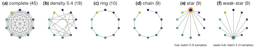

Six ways to connect K batches, three budgets, three doses of corruption
A spectral anchor is one compound seen in two batches: one pair of retention times. Anchors turn the batches into a graph, and a method is a rule for turning that graph into a map gk→l for every ordered pair, anchors or not. Each connected pair keeps B anchors; a share ε of them is moved by a fixed, large amount, as a wrong spectral match would be.
One real GC–MS run
Fish oil sample 1___SNA1_Liver_Male_A (batch sep2015), 10–30 min, m/z 40–400. Every retention-time slice holds a whole mass spectrum; an anchor is the same spectrum found in two batches.
Hover or drag across the run to scrub; arrow keys step one bin. Top: total ion chromatogram; middle: log intensity, retention time across and m/z up; right: the spectrum under the playhead, normalised to its largest ion. The tallest apex, at 14.40 min, is dominated by m/z 55, 74, 87. The display matrix is quantised to 8 bits. Data
The six topologies

One representative test world per K. Node colour is the batch, as in the drift chart; the ringed node is the hub. The star goes through batch 0 (5 samples at K = 10); the weak-star through the batch with the fewest samples (batch 5, 3 samples). Density 0.4 is redrawn in every cell; K = 20 was run on the complete, chain and density 0.4 graphs only. Data
True drift of every batch
What each method has to recover, exactly known in the synthetic worlds.
Batch k records a compound of latent time τ at τ + dk(τ). Drifts span -4.42 to +3.91 min in this world. Hover a curve.
Five methods see the same anchors in every cell. Joint fits one monotone warp per batch into a shared frame from all kept anchors. Star uses only anchors that touch a hub (batch 0); Weak-star a hub with the fewest samples. Pairwise fits each connected pair alone and composes fits along the shortest anchor path; PCHIP does the same with a spline through every anchor. Stars are scored only on the pairs they reach.
A joint fit always agrees with itself. That is algebra, not evidence.
The joint model estimates one warp fk per batch and defines every map as gk→l = fl−1 ∘ fk. Any round trip returns exactly to its start. If wrong anchors pull one chain edge off, the shared frame absorbs the error and every map across that edge inherits it, still in perfect agreement with all the others.
Every cycle closes
…and can still be wrong by a minute
Test world 3 of K = 5, chain, B = 30, ε = 30 %, edge 1–2, the chain edge with the largest joint error. 21 clean and 9 corrupted anchors. World-median map error: Joint (CV λ = 300) 1.538 min, Joint (λ = 10) 0.116 min, Pairwise 0.073 min. 16 of 20 worlds of this setting are broken. Data
Every one of the 114 settings, every world
Pick batches, topology, anchor budget and corruption. One point per test world; boxes are quartiles, whiskers
the range; the vermilion line is the broken-world cutoff at 0.3 min. The tables hold the
medians, the tuned λ and the paired tests full_sparsity.txt reports for the setting.
| Method | Median map error (min) | Tuned λ | Broken worlds | Indirect pairs |
|---|
Paired tests reported for this setting in full_sparsity.txt: two-sided Wilcoxon over test worlds, Holm over all 94 RQ1b comparisons; Δ = joint − competitor, so negative favours the joint fit.
| Comparison | Median Δ (min) | Joint wins | p | Holm p |
|---|
Stars are scored only on the pairs they reach: on a chain the star through batch 0 reaches one pair; on a weak-star graph the star through the weak hub uses every anchor and is the joint model. “Indirect pairs” have no kept anchors between them. Data
Without JavaScript the explorer cannot run. Five key settings, read from the same data:
| Setting | Joint | Star | Composed pairwise |
|---|---|---|---|
| complete, B = 10, ε = 0 | 0.033 | 0.054 | 0.046 |
| complete, B = 10, ε = 0.3 | 0.043 | 0.144 | 0.171 |
| complete, B = 30, ε = 0.3 | 0.028 | 0.048 | 0.076 |
| chain, B = 30, ε = 0.3 | 1.525 | 0.052 | 0.140 |
| ring, B = 30, ε = 0.3 | 0.045 | 0.071 | 0.116 |
Few anchors and many wrong ones break everything; the chain breaks the joint fit first
Share of the 20 test worlds broken (median map error above 0.3 min), joint beside composed pairwise, in every corrupted setting. Hover a cell for its Wilson 95 % interval. At K = 5, chain, B = 30, ε = 30 % the joint fit breaks in 0.80 of worlds against 0.45 for composed pairwise.
Tuning λ helps. Even an oracle λ leaves 80 of 960 worlds broken.
Every corrupted setting of the weak-star, chain, ring and density 0.4 graphs at K = 5 and 10 was refitted at every λ. The cross-validated rule leaves 175 worlds broken, a fixed λ = 10 leaves 160, and choosing the best λ per world with the truth in hand still leaves 80. The oracle is a bound, not a rule: what remains is the model's failure. Click a bar to see which worlds.
K ∈ {5, 10} × 3 budgets × 2 corruption rates: 240 worlds per topology. The complete and star graphs were not refitted: no world broke there. Data
At a fixed edge density, the joint advantage grows with K
Per-world difference between the joint and the composed pairwise error at B = 30, ε = 15 %. On the density 0.4 graph it moves from +0.0034 min at K = 5 to -0.0118 min at K = 20: -0.0084 min per doubling of K, 95 % interval [-0.0107, -0.0063]. On the complete graph the joint fit leads at every K but the gap does not widen; on the chain, whose density falls as 2/K, pairwise stays ahead.
Small points: test worlds; large markers: medians; lines: least-squares fit on log2 K with its 95 % band from resampling worlds within each K. Negative favours the joint model. Data
All six rows
Joint − composed pairwise, median over all pairs (min), B = 30.
| Topology | ε | K = 5 | K = 10 | K = 20 | Slope [95 % CI] |
|---|---|---|---|---|---|
| complete | 0 | -0.0075 | -0.0071 | -0.0126 | -0.0021 [-0.0032, -0.0008] |
| complete | 0.15 | -0.0143 | -0.0105 | -0.0090 | +0.0026 [+0.0015, +0.0039] |
| chain | 0 | +0.0041 | +0.0050 | +0.0058 | -0.0002 [-0.0050, +0.0042] |
| chain | 0.15 | +0.0170 | +0.0136 | +0.0089 | -0.0098 [-0.0235, +0.0014] |
| density 0.4 | 0 | -0.0068 | -0.0076 | -0.0133 | -0.0047 [-0.0071, -0.0023] |
| density 0.4 | 0.15 | +0.0034 | -0.0052 | -0.0118 | -0.0084 [-0.0107, -0.0063] |
The fish oil anchors tell the same story
25,011 spectral anchors from 5 batches (36, 26, 16, 10 and 2 samples), thinned and corrupted like the synthetic worlds, 20 draws per setting. No truth exists, so each method is scored on the real anchors the draw did not keep. Strong hub sep2015, weak hub aug2015.
Held-out anchor error, median and IQR over 20 draws
Only aggregate error statistics of the real data are shown or published. Held-out anchors come from the same matching pipeline as the fitted ones: an independent sample of correspondences, not independent chemical ground truth. Data
Complete graph, budgets 10 and 100
Held-out anchor error (min), median over 20 draws.
| Setting | Joint | Star | Pairwise |
|---|---|---|---|
| B = 10, ε = 0 | 0.079 | 0.097 | 0.077 |
| B = 10, ε = 0.15 | 0.092 | 0.124 | 0.086 |
| B = 10, ε = 0.3 | 0.133 | 0.410 | 0.284 |
| B = 100, ε = 0 | 0.059 | 0.069 | 0.056 |
| B = 100, ε = 0.15 | 0.063 | 0.071 | 0.062 |
| B = 100, ε = 0.3 | 0.077 | 0.113 | 0.080 |
Few corrupted anchors (B = 10, ε = 30 %): the joint fit's 0.133 min against the star's 0.410 and pairwise's 0.284. Plenty of clean ones (B = 100, ε = 0): the three are within a few hundredths. And on the fish chain at B = 10, ε = 30 % the joint fit breaks too: 0.829 min against 1.149 for pairwise.
What these results do and don't show
One estimator, one drift family
Every finding is about joint-align's joint model with its robust reweighting and λ rule, on drifts made of a shift, a smooth ramp and a small wiggle. Other estimators and drifts with breakpoints were not tested.
Uniformly directed corruption
Corrupted anchors are moved by a fixed, large amount in one direction, as a systematic spectral mismatch would be. Whether real mismatches look like this is open. TODO(chemist check)
Monotone warps, one instrument
Elution order is assumed preserved between batches, which holds for one column and method TODO(chemist check); cross-instrument compatibility was not tested TODO(chemist check).
No deployment-time test yet
Breakdowns here are known because the truth is known. A rule that warns a user from the anchors alone, adaptive or edge-grouped regularisation, and calibrated uncertainty are future work. Held-out real anchors share the matching pipeline with the fitted ones.
Run it yourself
Everything comes from woodRock/trust-align, built on align-bench (data, anchors, worlds, graphs, metrics, provenance) and joint-align (the joint model). CPU only, explicit seeds, each script reads only what the earlier ones wrote. The fish oil data is private; scripts that need it skip without it.
01_check_setup.py — versions, data access, a joint-model sanity checkseconds02_full_sparsity.py — the full grid: 114 settings × 20 test worlds, checkpointed3.59 CPU h03_diagnose_lambda.py — every λ refitted on script 02's corrupted cells≈ 65 CPU min04_fish_sparsity.py — the fish oil arm (private data)≈ 83 CPU min05_figures.py — static figures and captions, checked against the reportsseconds06_site_data.py — this page's data, regenerated from the caches and stopped on any difference from the reportssecondsVersions behind the results
The provenance header every report starts with. Data
Cite the software
Jesse Wood. trust-align: when can joint GC–MS retention-time alignment be trusted? github.com/woodRock/trust-align. The repository's CITATION.cff has the full entry; a release DOI is TODO(DOI).